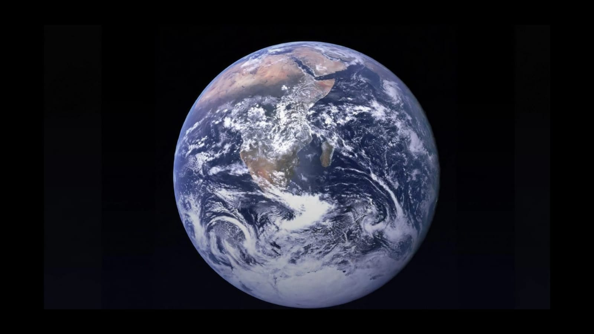

01
🌍 Earth
OUR HOME
Meaning: Earth is the planet where we live. It contains oceans, continents, an atmosphere, and all currently known life.
Earth is the third planet from the Sun. It rotates on its axis and revolves around the Sun.
Includes: Continents, oceans, countries,
ecosystems, and living organisms.